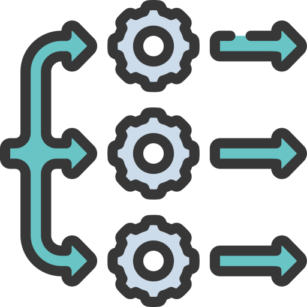
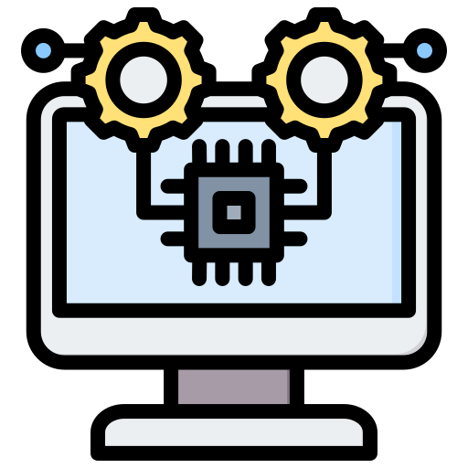

Unidad 4. Procesamiento paralelo
4.1 Aspectos Básicos de la Computación Paralela

La computación paralela es una técnica importante en la informática moderna que permite acelerar el procesamiento de grandes volúmenes de datos y resolver problemas
complejos de manera más eficiente mediante la ejecución simultánea de múltiples tareas en un conjunto de procesadores interconectados.
I. Arquitectura de los Sistemas Paralelos
La arquitectura de los sistemas paralelos se refiere a cómo se organizan los procesadores, la memoria y los dispositivos de entrada y salida en un sistema paralelo.
Algunos aspectos importantes incluyen:
-
Tipos de arquitecturas: existen diferentes tipos de arquitecturas, como la memoria compartida y la memoria distribuida, que determinan cómo se comparten los
recursos y se comunican los procesadores.
- Escalabilidad: la capacidad de un sistema paralelo para agregar más procesadores sin comprometer el rendimiento general.
- Topología: cómo se interconectan los procesadores y la memoria para permitir la comunicación y el intercambio de datos.
II. Algoritmos y Estructuras de Datos Paralelos
Los algoritmos y estructuras de datos paralelos son aquellos que están diseñados específicamente para aprovechar la capacidad de procesamiento paralelo de un
sistema. Algunos aspectos importantes incluyen:
- División de trabajo: cómo se divide el trabajo en subprocesos independientes para procesarlos simultáneamente en diferentes procesadores.
- Técnicas de división y conquista: cómo se divide un problema complejo en subproblemas más pequeños y manejables que pueden ser resueltos en paralelo.
-
Sincronización: cómo se asegura que los diferentes subprocesos se comuniquen entre sí de manera efectiva y se coordinen para completar la tarea de manera
eficiente.
III. Programación Paralela
La programación paralela es el proceso de escribir programas que pueden ejecutarse en paralelo en un sistema paralelo. Algunos aspectos importantes incluyen:
-
Herramientas y lenguajes de programación específicos: se requiere el uso de herramientas y lenguajes de programación específicos para la programación paralela,
como MPI (Message Passing Interface) y OpenMP (Open Multi-Processing).
- Administración de recursos: cómo se gestiona el uso de recursos compartidos, como la memoria y los dispositivos de entrada y salida.
-
Depuración y perfilado: cómo se identifican y solucionan problemas relacionados con la programación paralela, como los cuellos de botella y la sincronización
ineficiente.
En conclusión, la computación paralela es una técnica importante en la informática moderna que permite acelerar el procesamiento de grandes volúmenes de datos y
resolver problemas complejos de manera más eficiente mediante la ejecución simultánea de múltiples tareas en un conjunto de procesadores interconectados. Los
aspectos básicos de la computación paralela incluyen la arquitectura de los sistemas paralelos, los algoritmos y estructuras de datos paralelos, y la programación
paralela.
4.2 Tipos de Computación Paralela
Paralelismo a nivel de bit
Se refiere a la aceleración en la arquitectura de computadores que se lograba duplicando el tamaño de la palabra en la computadora, es decir, la cantidad de
información que el procesador puede manejar por ciclo. Históricamente, se han ido reemplazando microprocesadores de menor tamaño por otros de mayor tamaño, como los
de 4, 8, 16, 32 y 64 bits.
Paralelismo a nivel de instrucción
Se refiere a la capacidad de los procesadores modernos de ejecutar múltiples instrucciones en diferentes etapas de finalización a través de un pipeline de varias
etapas.
Paralelismo a nivel de datos
Se refiere a la distribución de datos entre diferentes nodos computacionales para su procesamiento en paralelo. Muchas aplicaciones científicas y de ingeniería
muestran paralelismo de datos, aunque la dependencia de terminación de ciclo puede evitar la paralelización de ciclos.
Paralelismo a nivel de tareas
Es un paradigma de programación que asigna diferentes tareas a cada procesador de un sistema de cómputo, permitiendo que cada uno realice su propia secuencia de
operaciones. Se representa mediante un grafo de tareas que se divide en subgrafos asignados a diferentes procesadores.
4.2.1 Clasificación
La clasificación de la computación paralela se basa en la forma en que se distribuyen los datos y el procesamiento en un sistema paralelo. Se pueden distinguir dos
tipos principales:
-
Computación paralela de memoria compartida: En este tipo de computación, varios procesadores comparten un espacio de memoria común. Todos los procesadores pueden
acceder a cualquier parte de la memoria, lo que facilita el intercambio de información entre los procesadores. Ejemplos de sistemas de memoria compartida son las
computadoras multiprocesador y los clústeres de memoria compartida.
-
Computación paralela de memoria distribuida: En este tipo de computación, los procesadores tienen su propia memoria local y se comunican entre sí a través de una
red. Cada procesador es responsable de una parte de los datos y del procesamiento, y los datos se transfieren entre los procesadores según sea necesario. Ejemplos
de sistemas de memoria distribuida son los clústeres de memoria distribuida y los sistemas de computación en la nube.
Otra forma de clasificar la computación paralela es la siguiente:
- Computación multinúcleo: Se refiere a la presencia de múltiples unidades de ejecución (núcleos) en un mismo chip de procesador.
-
Multiprocesamiento simétrico (SMP): Se refiere a un sistema computacional que cuenta con múltiples procesadores idénticos que comparten memoria y están conectados
a través de un bus.
-
Computación en clúster: Se refiere a un grupo de computadoras que trabajan juntas en estrecha colaboración, lo que les permite ser consideradas en algunos
aspectos como un solo equipo.
- Procesamiento paralelo masivo: Se refiere a sistemas más grandes que los clústeres y con más de 100 procesadores.
-
Computación distribuida: Es la forma más distribuida de la computación paralela, en la que se utilizan computadoras conectadas a través de Internet para trabajar
en un problema.
-
Circuitos integrados de aplicación específica (ASIC): Son procesadores diseñados específicamente para una aplicación dada, lo que les permite estar completamente
optimizados para esa aplicación.
-
Procesadores vectoriales: Pueden ejecutar la misma instrucción en grandes conjuntos de datos, lo que los hace ideales para tareas que involucran una gran cantidad
de datos que se deben procesar de manera eficiente.
4.2.2 Arquitectura de Computadoras Secuenciales
La arquitectura de computadoras secuenciales se refiere a la estructura básica de una computadora convencional de un solo procesador. En este tipo de computadora,
los datos se procesan secuencialmente, uno después de otro, y el procesador se encarga de controlar todas las operaciones. La memoria se organiza en una estructura
jerárquica, con memoria caché de alta velocidad cerca del procesador y memoria de acceso más lento a medida que se aleja del procesador. Los procesadores modernos
utilizan múltiples núcleos para aumentar la velocidad de procesamiento, pero aún se basan en una arquitectura secuencial.
4.2.3 Organización de Direcciones de Memoria
La organización de direcciones de memoria se refiere a cómo se accede a los datos en una computadora. La memoria de la computadora se divide en unidades de
almacenamiento llamadas palabras, y cada palabra tiene una dirección única. El procesador utiliza estas direcciones para acceder a los datos y las instrucciones
almacenadas en la memoria. La organización de direcciones de memoria puede ser lineal, donde las direcciones se asignan consecutivamente a las palabras, o
segmentada, donde las direcciones se dividen en segmentos que se asignan a diferentes partes de la memoria. La organización segmentada se utiliza en sistemas de
memoria virtual, donde la memoria física se divide en segmentos que se asignan a diferentes procesos.
4.3 Sistemas de Memoria Compartida

La memoria compartida es un modelo de programación paralela en el cual múltiples procesadores comparten una única dirección de memoria. Los procesadores pueden
acceder a cualquier ubicación de memoria en cualquier momento y pueden comunicarse a través de las variables compartidas.
En computación distribuida y paralela, un nodo se refiere a una unidad de procesamiento en una red de computadoras que colabora en la realización de una tarea o un
conjunto de tareas.
4.3.1 Redes de Interconexión Dinámicas ó Indirectas
Las redes de interconexión dinámicas o indirectas son aquellas en las que los nodos no están conectados directamente y se requiere una o más etapas para alcanzar un
destino. Este tipo de redes se utilizan en sistemas de memoria compartida en los que múltiples procesadores acceden a una memoria compartida centralizada.
4.3.1.1 Redes de Medio Compartido
En las redes de medio compartido, todos los nodos están conectados a un medio compartido, como un bus o un anillo. Los nodos pueden comunicarse directamente con
otros nodos en el mismo medio compartido o acceder a la memoria compartida a través del medio compartido.
4.3.1.2 Redes Conmutadas
En las redes conmutadas, los nodos están conectados mediante una red de conmutación, que puede ser una red de conmutadores o una red de ruteadores. Los nodos pueden
comunicarse con otros nodos a través de la red de conmutación y acceder a la memoria compartida a través de un controlador de memoria compartida. Las redes
conmutadas proporcionan un mayor grado de escalabilidad y tolerancia a fallos que las redes de medio compartido.
4.4 Sistemas de Memoria Distribuida: Multiprocesadores

Los sistemas de memoria distribuida son aquellos en los que varias unidades de procesamiento comparten una memoria común, pero no necesariamente la misma CPU. En un
sistema de memoria distribuida, cada CPU tiene su propia memoria local y puede acceder a la memoria de otras CPUs a través de una red de interconexión.
Los multiprocesadores son sistemas de memoria distribuida en los que hay varias CPU que comparten una única memoria. En un multiprocesador, las CPUs pueden ejecutar
programas en paralelo y acceder a la memoria compartida simultáneamente. Esto permite un mayor rendimiento y una mejor utilización de los recursos del sistema.
4.4.1 Redes de Interconexión Estáticas
Una red de interconexión estática es una topología de red en la que los nodos están conectados por un conjunto de enlaces fijos y permanentes. En una red de
interconexión estática, la conexión física entre los nodos no cambia, lo que significa que la ruta de comunicación entre los nodos también es fija.
Las redes de interconexión estáticas se utilizan comúnmente en sistemas de memoria distribuida como los multiprocesadores. En un multiprocesador, las CPUs se
conectan a la memoria compartida a través de una red de interconexión estática. La elección de la topología de la red de interconexión estática depende de factores
como el número de CPUs en el sistema, la latencia y el ancho de banda requeridos para las comunicaciones entre las CPUs y la memoria compartida.
Algunos ejemplos de redes de interconexión estáticas utilizadas en sistemas de memoria distribuida son la topología en anillo, la topología en árbol y la topología
en malla. Cada una de estas topologías tiene sus propias ventajas y desventajas en términos de latencia, ancho de banda y escalabilidad.
-
Topología en anillo: Es una red de interconexión en la que cada nodo está conectado al siguiente y al anterior, formando un círculo cerrado. Los datos se
transmiten en un solo sentido alrededor del anillo, y cada nodo actúa como repetidor, regenerando la señal y transmitiéndola al siguiente nodo.
-
Topología en árbol: Es una red de interconexión en la que los nodos se conectan en una estructura jerárquica similar a un árbol. Un nodo central, llamado raíz, se
conecta a varios nodos secundarios, que a su vez pueden estar conectados a otros nodos, formando ramas. Los datos se transmiten desde el nodo raíz a los nodos
hoja, y cada nodo actúa como un punto de enrutamiento para los datos que se transmiten a través de él.
-
Topología en malla: Es una red de interconexión en la que cada nodo está conectado a todos los demás nodos, formando una red completa. Los datos pueden ser
enviados directamente de un nodo a otro sin tener que pasar por nodos intermedios. Esta topología es muy escalable y permite un alto rendimiento, pero también
requiere muchos enlaces y puertos en cada nodo.
4.5. Casos de estudio

La computación paralela se utiliza en una amplia variedad de aplicaciones, desde la simulación científica hasta el procesamiento de grandes volúmenes de datos.
Algunos casos de estudio de la computación paralela incluyen:
-
Simulaciones científicas: Los científicos utilizan la computación paralela para simular procesos físicos complejos, como la dinámica de fluidos o la evolución del
universo. Estas simulaciones requieren un alto grado de paralelismo para procesar grandes cantidades de datos en un tiempo razonable.
-
Procesamiento de imágenes y video: La computación paralela se utiliza en aplicaciones de procesamiento de imágenes y video para procesar grandes volúmenes de
datos en tiempo real. Un ejemplo es el procesamiento de imágenes médicas, que puede ayudar a los médicos a detectar enfermedades y a planificar tratamientos.
-
Análisis de datos: La computación paralela se utiliza en aplicaciones de análisis de datos para procesar grandes conjuntos de datos y extraer información útil. Un
ejemplo es el análisis de datos genómicos, que puede ayudar a los investigadores a identificar genes asociados con enfermedades.
-
Redes neuronales y aprendizaje profundo: La computación paralela se utiliza en aplicaciones de aprendizaje automático para entrenar redes neuronales y modelos de
aprendizaje profundo. Estos modelos requieren un alto grado de paralelismo para procesar grandes conjuntos de datos y mejorar la precisión de las predicciones.
Ejemplos reales:
-
Proyecto SETI (Search for Extraterrestrial Intelligence): Utiliza la computación paralela para analizar datos de radio telescopios en busca de señales que puedan
ser de origen extraterrestre. El proyecto SETI aprovecha la capacidad de procesamiento de miles de computadoras conectadas en una red para acelerar la búsqueda.
-
Investigación en genómica: Los científicos utilizan la computación paralela para analizar grandes conjuntos de datos genómicos, lo que les permite identificar
genes relacionados con enfermedades y desarrollar tratamientos personalizados. Un ejemplo de esto es el Proyecto Genoma Humano, que implicó el análisis de enormes
cantidades de datos genómicos.
-
Simulación de sistemas complejos: La computación paralela se utiliza en aplicaciones de simulación para modelar sistemas complejos como la dinámica de fluidos, la
física de partículas y la evolución del universo. Un ejemplo es el Large Hadron Collider (LHC) del CERN, que utiliza la computación paralela para procesar enormes
cantidades de datos generados por el acelerador.
-
Exploración de petróleo y gas: La industria del petróleo y el gas utiliza la computación paralela para procesar grandes volúmenes de datos geológicos, lo que les
permite identificar las mejores áreas para explorar y perforar pozos de petróleo y gas.
-
Simulaciones financieras: Las instituciones financieras utilizan la computación paralela para realizar simulaciones complejas, como el análisis de riesgos y la
optimización de carteras. Estas simulaciones ayudan a las instituciones financieras a tomar decisiones informadas y a reducir los riesgos.